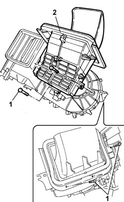
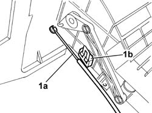

5040C18 RECIRCULATION AIR INTAKE UNIT RR WITH AIR CONDITIONER BOX REMOVED
- Path
- Procedures > 50 AUXILIARY UNITS > 5040 AIR CONDITIONING CASING AND COMPONENTS > 5040C AIR CONDITIONER BOX AND COMPONENTS > 5040C18 RECIRCULATION AIR INTAKE UNIT RR WITH AIR CONDITIONER BOX REMOVED
- Kind
- repair procedure (removal / refitting; the operation number is the code)
- Applies to
- all engines; all production periods
- Interactive page
- https://sloeber94.github.io/elrnDB-fDct/en/#/244001291
Applies to: all engines; all production periods
 Removing
Removing
 Refitting
Refitting1. Undo the fixing bolts.
2. Remove the recirculation air intake unit.

Applies to: all engines; all production periods
1. Release the control cable (1a) from the spring (1b) and disconnect it from the recirculation air intake.

Applies to: all engines; all production periods
Refitting
Removing- Connect the control cable and secure it using the special spring.
- Position the recirculation air intake unit and tighten the fixing bolts.
Topics that link to this page (4)
- 5040B22 AIR CONDITIONING SYSTEM DE-MISTER THERMOSTAT - R+R
- 5040C54 AIR CONDITIONER HEATER RADIATOR - R+R WITH AIR CONDITIONER BOX REMOVED
- 5040C66 AIR CONDITIONER EVAPORATOR - R+R WITH AIR CONDITIONER BOX REMOVED
- 5040C80 AIR INTAKE AND RECIRCULATION FLAP - R R WITH AIR CONDITIONING HOUSING DISCONNECTED